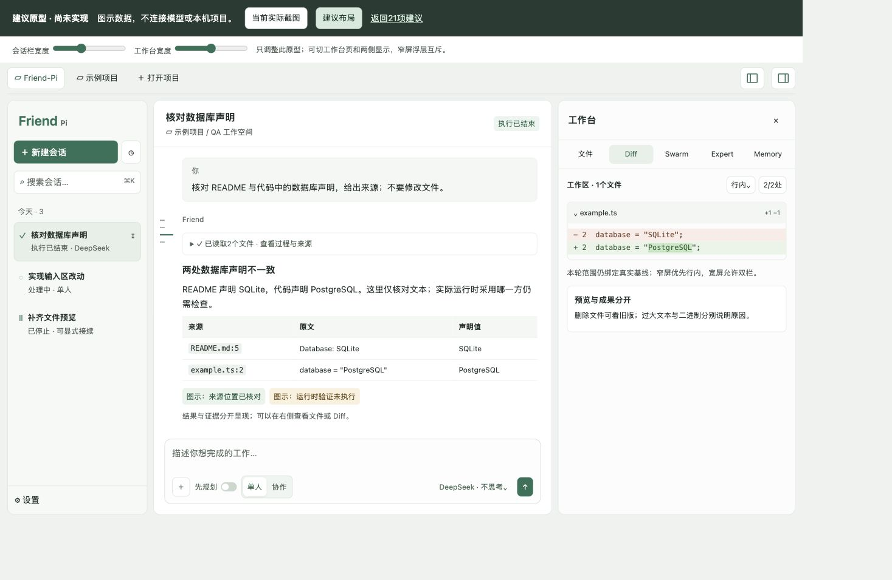

<!doctype html><html lang="zh-CN"><meta charset="utf-8"><meta name="viewport" content="width=device-width,initial-scale=1"><title>Friend-Pi · 当前与建议布局对照</title><style>*{box-sizing:border-box}body{margin:0;background:#eff3ef;color:#27332d;font:15px/1.7 -apple-system,'PingFang SC',sans-serif}main{padding:18px;max-width:1600px;margin:auto}h1{font-size:23px;margin:0}p{margin:6px 0 16px;color:#59675e}.grid{display:grid;grid-template-columns:1fr 1fr;gap:15px}section{background:white;border:1px solid #ccd9cf;border-radius:9px;overflow:hidden}h2{font-size:15px;font-weight:560;margin:0;padding:10px 13px;border-bottom:1px solid #dce6df}img{width:100%;height:auto;display:block}a{color:#286b51}footer{padding:12px 0;font-size:13px;color:#59675e}@media(max-width:850px){.grid{grid-template-columns:1fr}}</style><main><h1>Friend-Pi · 当前与建议布局</h1><p>布局方向：保留 Friend 结构，提高文字可读性、收敛密度、减轻过程卡片；建议尚未实施。</p><div class="grid"><section><h2>当前：c1415c7 应用实际窗口</h2></section><section><h2>建议：浅色界面原型 · 图示数据</h2></section></div><footer>两图均对应1320×860逻辑窗口，输出像素密度不同；等宽展示，不是像素逐一对齐。建议内容用于说明阅读/布局，不表示新功能已运行或通过验证。<br><a href="prototype.html">交互原型</a> · <a href="index.html">21项逐项建议与前后图</a></footer></main></html>
